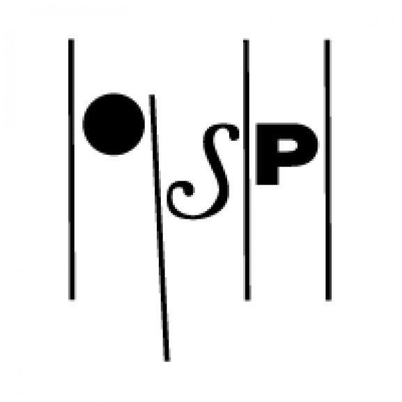
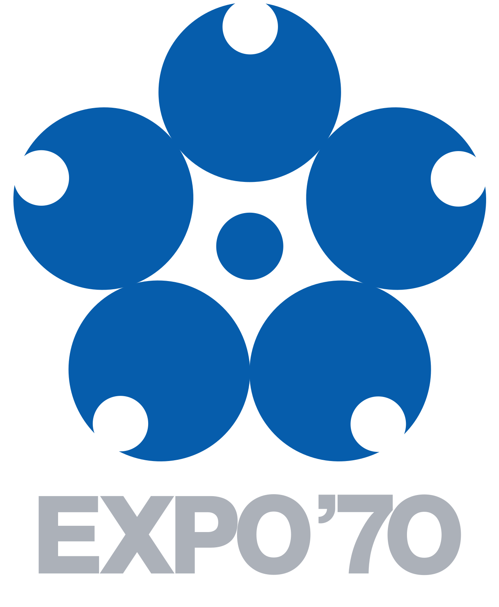
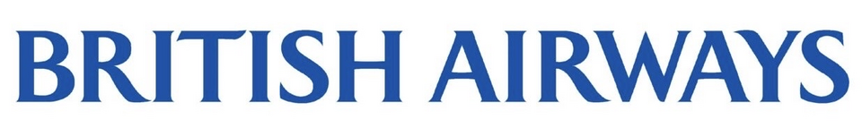

산업별 브랜드
산업별로 찾는 브랜드
브랜드가 실제로 경쟁하는 시장을 기준으로 12개 산업으로 나눴습니다. 카드를 누르면 해당 산업의 전체 브랜드 목록으로 이동합니다.
미디어·엔터테인먼트326개


 기술·전자177개
기술·전자177개


 식음료160개
식음료160개


 리테일·커머스131개
리테일·커머스131개


 패션·럭셔리106개
패션·럭셔리106개


 모빌리티100개
모빌리티100개


 홈·라이프스타일63개
홈·라이프스타일63개


 뷰티·퍼스널케어51개
뷰티·퍼스널케어51개


 스포츠·아웃도어47개
스포츠·아웃도어47개


 헬스·제약41개
헬스·제약41개


 여행·호스피탈리티39개
여행·호스피탈리티39개


콘텐츠, 캐릭터, 플랫폼, 팬덤을 통해 문화적 영향력을 확장한 브랜드를 정리합니다.

브랜드·비즈니스300개브랜드 평가, 컨설팅, 비즈니스 지표처럼 브랜드를 산업으로 다루는 항목을 모읍니다.
기술·전자177개제품, 인터페이스, 반도체, 디지털 생태계로 생활 방식을 바꾼 기술 브랜드를 봅니다.
식음료160개스타벅스부터 코카-콜라까지, 일상을 채우는 음료·식품 브랜드의 역사와 전략을 연결합니다.
리테일·커머스131개아마존, 유니클로, 립톤처럼 구매 경험과 유통 방식을 바꾼 브랜드를 탐색합니다.
패션·럭셔리106개루이비통, 샤넬, 에르메스처럼 욕망과 정체성을 설계한 브랜드들의 계보를 읽습니다.
모빌리티100개자동차와 이동 경험을 통해 기술, 디자인, 라이프스타일을 결합한 모빌리티 브랜드를 연결합니다.
홈·라이프스타일63개주방, 가구, 생활용품처럼 일상의 사용성을 브랜드 자산으로 만든 사례를 모읍니다.
뷰티·퍼스널케어51개피부, 향, 자기표현을 둘러싼 뷰티·퍼스널케어 브랜드의 감각과 시장을 다룹니다.
스포츠·아웃도어47개나이키부터 파타고니아까지 운동, 장비, 아웃도어 문화를 만든 브랜드를 탐색합니다.
헬스케어와 제약 브랜드가 신뢰, 효능, 생활 습관을 어떻게 구축했는지 정리합니다.
여행·호스피탈리티39개호텔, 여행, 리조트 경험을 통해 장소와 환대를 브랜드화한 사례를 읽습니다.
매시브뮤직MassiveMusic엑스포 '75Expo '75JYP엔터테인먼트JYP Entertainment한국 · 1996년런던 자연사박물관Natural History Museum1881년상파울루 주립 교향악단OSESP 필브룩 미술관Philbrook Museum of Art
필브룩 미술관Philbrook Museum of Art 베를리츠Berlitz Corporation독일 · 1878년
베를리츠Berlitz Corporation독일 · 1878년 로열 온타리오 박물관Royal Ontario Museum (ROM)
로열 온타리오 박물관Royal Ontario Museum (ROM) 몬트리올 미술관Musée des beaux-arts de Montréal
몬트리올 미술관Musée des beaux-arts de Montréal
엑스포 '70Expo '70 엑스포 '85Expo 85
엑스포 '85Expo 85 엑스포 '90Expo '90
엑스포 '90Expo '90


기술·전자 177개
기술·전자 전체 보기 →


식음료 160개
식음료 전체 보기 →


패션·럭셔리 106개
패션·럭셔리 전체 보기 →


모빌리티 100개
모빌리티 전체 보기 →


 아스피린Aspirin1899년유한양행Yuhan Corporation한국 · 1926년종근당Chong Kun Dang한국 · 1941년광동제약Kwangdong Pharmaceutical한국 · 1963년대웅제약Daewoong Pharmaceutical한국 · 1978년
아스피린Aspirin1899년유한양행Yuhan Corporation한국 · 1926년종근당Chong Kun Dang한국 · 1941년광동제약Kwangdong Pharmaceutical한국 · 1963년대웅제약Daewoong Pharmaceutical한국 · 1978년 SK바이오팜SK Biopharmaceuticals한국
SK바이오팜SK Biopharmaceuticals한국 동아에스티Dong-A ST2013년
동아에스티Dong-A ST2013년 프레임워크Framework미국 · 2019년
프레임워크Framework미국 · 2019년 미국 질병통제예방센터United States Centers for Disease Control and Prevention미국
미국 질병통제예방센터United States Centers for Disease Control and Prevention미국 휴젤Hugel한국
휴젤Hugel한국 동화약품Dong Wha Pharm한국 · 1897년
동화약품Dong Wha Pharm한국 · 1897년 GC녹십자GC Biopharma한국 · 1967년클럽메드CLUB MED프랑스 · 1950년제주항공Jeju Air한국 · 2005년탐스TOMS티웨이항공T'way Air한국 · 2004년진에어Jin Air한국 · 2008년
GC녹십자GC Biopharma한국 · 1967년클럽메드CLUB MED프랑스 · 1950년제주항공Jeju Air한국 · 2005년탐스TOMS티웨이항공T'way Air한국 · 2004년진에어Jin Air한국 · 2008년
영국항공British Airways영국 · 1974년 디즈니랜드Disneyland미국 · 1955년알리탈리아Alitalia이탈리아 · 1946년국제 민간 항공 기구International Civil Aviation Organization캐나다 · 1944년
디즈니랜드Disneyland미국 · 1955년알리탈리아Alitalia이탈리아 · 1946년국제 민간 항공 기구International Civil Aviation Organization캐나다 · 1944년 에어 프랑스Air France프랑스 · 1933년
에어 프랑스Air France프랑스 · 1933년 에어 뉴질랜드Air New Zealand뉴질랜드 · 1940년
에어 뉴질랜드Air New Zealand뉴질랜드 · 1940년 월트 디즈니 월드 리조트Walt Disney World Resort미국 · 1971년
월트 디즈니 월드 리조트Walt Disney World Resort미국 · 1971년